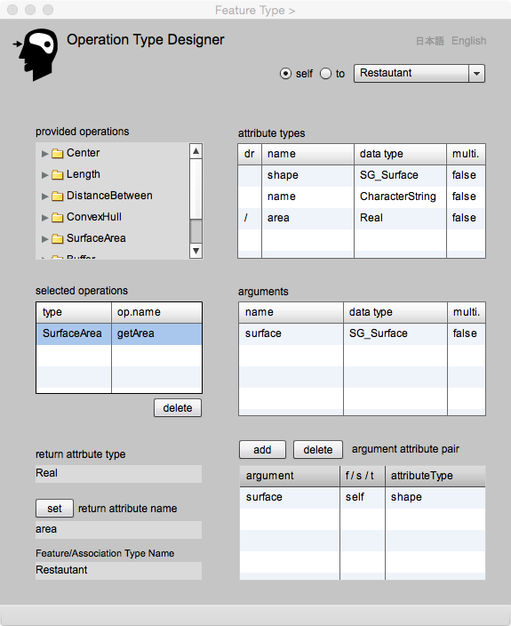
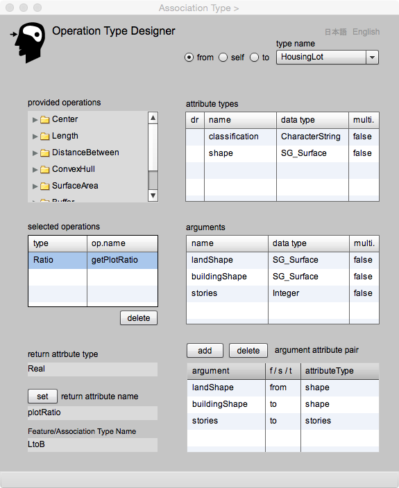

Operation Type Designer
操作型の設計
このページは，操作型の設計と編集を行うためにあります． 操作は，インスタンスのプロパティの一つですが，属性とちがって，値が欲しいときに，操作のためのプログラムが働いて，その時点の要求に応える戻り値を返します．例えば、町という地物があって，属性として年ごとの人口データが蓄積されているとします．このデータは毎年変化します．そして，この町の１０年後の人口を予測したいという要求があったとき，人口予測の機能を持つ操作があらかじめ定義されていれば，その時点の要求に応える予測値を戻します．gittokでは，このような働きをもつプロパティを操作と呼びますが，地理情報科学で研究されている空間解析は，多くの場合，操作として実装することができます．
地物型の操作を定義するためには，以下の要素が求められます．
1. アルゴリズム（プログラム）
2. 操作名
3. 入力する引数
4. 出力する戻り値
gittok では，UML クラスの操作欄には，操作は以下のように記述することを期待しています．ただし，クラス表現が複雑になってしまうので，省略表現を行っても構いません．
operation (argument1:DataType1, argument2:DataType2, ......): derived attribute name: Datatype;
アルゴリズムとはこの場合，引数を使って戻り値を返すプログラムモジュールのことです．gittok には基本的な操作が用意されています．しかし種類は限られているので，自分の要求にあった操作を自分で開発したくなるかもしれません．その場合の実装については，空間解析のための Analyist ページで，解説します．
操作の名称 (name) とは，アルゴリズムを実装しているプログラムの名前のことです．gittok では，操作のためのプログラムは，geoOperationと称するパッケージに含まれるクラスの関数として定義されますので，その名前は，クラス名と関数の名前の組み合わせになります．
引数 (argument) とは，プログラムに与える入力パラメータのことです．例えば，ある土地の面積を求めたい場合は，土地の境界線を示すリング状の閉じた座標列が，引数として与えられます．gittokでは，引数は地物や関連の属性でなければいけません．しかし，操作を開発するときに，引数に独自の名前とデータ型を与えます．そこで，地物がもつどの属性が操作のどの引数に対応するかを決める必要があります．それをgittokでは，操作と属性の対 (argument attribute pair) と呼んでいます．
戻り値 (return value)とは，操作の結果のことです．これも地物や関連の属性になります．その属性のことをgittok では派生属性と呼びます．操作を定義するときは，引数と同様に，どの派生属性が戻り値になるか，指定します．
引数や戻り値のデータ型は，属性と操作の間で一致しなければいけません．一致しないとエラーになります．
ついでに言いますと，操作の名称と引数をあわせて，シグネチャ (signature) ということがあります．
Operation Type ページは以上の要素を宣言して，地物型が含む操作の型を定義するためにあります．操作型の定義について，以下に簡単な例を示します．
地物操作定義の例
ここでは，建物が形状を属性としてもつとき，その面積を求める操作の定義をやってみましょう．下図を参考にして下さい．
まず，Feature Type ページを使って地物型 Buildingを作ります．次にAttribute Type ページを使って，SG_Surfaceをデータ型とするshapeという属性を与えましょう．次に面積を示す，Real をデータ型にする area という属性を派生属性として定義しましょう．shape は引数になり，area は戻り値になります．これで Attribute Type ページ は閉じます．
次に，Operation Type ページを開きましょう．すると，Provided operations リストに，あらかじめ用意されている操作が一覧表示されています．この中の SurfaceArea を選択して下さい．すると，getArea という操作が見つかります．これを選ぶと，Selected operations 欄にその名前が表示され，それを指定すると，Arguments 欄にSG_Surfaceをデータ型とする surface という名前が出現します．これが，この操作の引数になります．また，この引数は Building の shape と対応します．そこで，Attribute types 欄の shape と，Arguments 欄の surface を指定します．そして，add ボタンを押すと，引数と属性の対を示すArgument attribute pair 欄に，その対応関係が表示されます．ちなみに s/ f/ t というカラム（列）がありますが，これは，関連がもつ操作を定義する場合に必要になる項目です．
次に，return attribute nameの欄に注目しましょう．ここには操作の結果である戻り値が入る属性を指定します．その型は欄の上に示されている return type と同じ型をもつ派生属性でなければいけません．Atribute types 欄で，area を指定し set ボタンを押すと，戻り値の名前が return attribute name 欄に表示されます．これで，面積を求めるgetArea という操作を Building に与えたことになります．
Operation Type ページ の操作画面（地物の操作）

図1. 建物の面積を求める操作の定義
FIELDS
provided operations
利用する操作型を選択します．選択すると，Selected operations欄にその名前が出てきます．
attribute types
属性型の一覧です．関連型の操作の場合は，self ボタンを押すと関連型自身の属性，from ボタンを押すと，関連型のfrom地物の属性，to ボタンを押すと，to地物の属性が表示されます．ここで操作に使われる引数の選択をします．引数と属性の対を作るためには，ここで属性型を指定しておきます．
arguments
ここには，操作への入力に使われる引数が表示されています．この中から，上のattribute types欄で指定した属性と対になるものを選択します．
argument attribute pair
addボタンを押すことによって，ここに属性と引数の対が，表示されます．from to欄には，関連型の操作を定義するときに，from地物から来た属性か，to地物から来た属性かを示すためにあります．普通の地物の操作の場合は，この欄にはselfと表示されます．
return type
provided operationsで操作を選択すると，selected operations 欄にその名前が表示されると共に，ここに戻り値のデータ型が表示されます．地物や関連の操作の戻り値が入る属性のデータ型はこれに一致しなければいけません．
return attribute name
操作の結果戻される値が入る属性型をattribute types一覧から選択すると，ここにその名前が表示されます．
Feature/Association Type Name
操作の戻り値が入る属性をもつ地物または関連の型名が，ここに表示されます．
BUTTONS
self
このラジオボタンを押すと，現在選択されている地物又は関連がもっている属性の一覧がattribute types欄に表示されます．
to
このラジオボタンを押すと，現在選択されている関連のto地物がもっている属性の一覧がattribute types欄に表示されます.
add
属性と，それに対応する引数を指定して，このボタンを押すと，属性と引数の対が表示されます．
delete (argument attribute pair)
このボタンを押すと，選択されている行が削除されます．
delete (selected operations)
このボタンを押すと，選択されている行が削除されます．
set
このボタンを押すと，attribute types欄で選択されている属性の名前が表示されます．ただし，データ型がreturn typeと一致しなければいけません．
日本語
今あなたが読んでいるドキュメントが表示されます．
English
You can read the tutorial written in English.
関連操作定義の例
関連型も属性や操作をもつことができます．例えば，建物の前面にはたいていの場合，道路がありますが，道路は建物と道路の関連において「前面道路」という役割をもっています．また，建物から前面道路までの距離などは，この関連がもつ属性になりえます．そしてその距離を求める操作も関連がもつ操作ととらえることができます．そこで，ここでは建物と道路の関連であるBtoR を宣言し，建物と道路の間の距離を求める操作を定義しましょう．
まず，Feature Type ページ を使って，建物 Buildingと道路 Road を定義しましょう．Buildingには，SG_Surfaceをデータ型とするshape及び，SG_Pointをデータ型とする center を属性としてもたせましょう．Roadには，その形状を示す SG_Curve をデータ型とする centerLine を属性としてもたせましょう．
次に，Association Typeページ を使って，建物と道路の関連として，BtoRという関連型を定義しましょう．この関連型には，建物から道路までの距離を示す distance という派生属性をもたせましょう．データ型は主題属性の中から Real を選択します．また，計量の単位 (unit) はmとしておきましょう ．これで準備は終わりです．
さて，建物から道路までのの距離を求める操作を定義します．そのためには，Association Typeページ からedit Operation ボタンを押して，Operartion Type ページ を開きます．そうすると，下に示すようなページが現れます．このページの上部には，Feature Type Designer から開いたときとは異なる部分があります．
ラジオボタン self を押すと，今操作を定義しようとしている関連型の属性一覧がattribute types欄に現れます．fromボタンを押すと，関連のfrom側，この連の場合は Building の属性一覧がattribute typesに現れ，地物型の名前が feature types欄に表示されます．toボタンを押すと，関連のto側，この例の場合は Road の属性一覧がattribute typesに現れます．これらの中から選んで，引数と属性の対や戻り値を設定します．
まず，操作を選びましょう．ここでは，DistanceBetweenの中のdistanceCtoSを選びます．
次に，ラジオボタン self を指定しましょう．するとdistanceがattribute types欄に出てきます．これは操作の戻り値が入る属性なので，これを選択して，setボタンを押します．
次に，fromを選びましょう．するとBuildingの属性であるshapeとcenterが表示されます．centerは道路までの距離を求める引数になります．そこで，更にarguments欄でこれに対応するfromPointを選択し，setボタンを押します．
次に．to を選びましょう．するとRoad の属性である centerLine が表示されます．この属性は道路までの距離を求める引数になります．そこで，更にこれに対応するtoCurve を arguments 欄で選択し，set ボタンを押します．
argument attribute pair 欄には，2行の情報が表示されています．ffrom は Building から，to は Road から来た属性が使用されていることがわかります．以上で操作を定義する処理は終わりです．
このページを離れて，Association Type Designer に戻って，BtoR 関連を add しましょう．
Operation Type Designer の操作画面（関連の操作）

表示欄
provided operations
利用する操作型を選択します．選択すると，Selected operations欄にその名前が出てきます．
attribute types
地物型がもつ属性型の一覧です．関連型の操作の場合は，self ボタンを押すと関連型自身の属性，from ボタンを押すと，関連型のfrom地物の属性，to ボタンを押すと，to地物の属性が表示されます．ここで操作に使われる引数の選択をします．引数と属性の対を作るためには，ここで属性型を指定しておきます．
type name
ラジオボタンのfrom, self, toを選ぶと，該当する地物型（selfの場合は関連型自身）の名前がここに表示されます．
multi
from又はtoの多重度が複数の場合にチェックが現れます．
role name
toラジオボタンを押すと，地物の役割名が表示されます．
arguments
ここには，操作への入力に使われる引数が表示されています．この中から，上のattribute types欄で指定した属性と対になるものを選択します．
argument attribute pair
addボタンを押すことによって，ここに属性と引数の対を，表示することができます．from toは，関連型の操作を定義するときに，from地物から来た属性か，to地物から来た属性かを示すためにあります．普通の地物の操作の場合は，この欄にはselfと表示されます．
return type
provided operationsで操作を選択すると，selected operations 欄にその名前が表示されると共に，ここに戻り値のデータ型が表示されます．地物や関連の操作の戻り値が入る属性のデータ型はこれに一致しなければいけません．
return attribute name
操作の結果戻される値が入る属性型をattribute types一覧から選択すると，ここにその名前が表示されます．
BUTTONS
self
このラジオボタンを押すと，現在選択されている地物又は関連がもっている属性の一覧がattribute types欄に表示されます．
from
このラジオボタンを押すと，現在選択されている関連のfrom地物がもっている属性の一覧がattribute types欄に表示されます．
to
このラジオボタンを押すと，現在選択されている関連のto地物がもっている属性の一覧がattribute types欄に表示されます.
add
属性と，それに対応する引数を指定して，このボタンを押すと，属性と引数の対が表示されます．
delete (argument attribute pair)
このボタンを押すと，選択されている行が削除されます．
delete (selected operations)
このボタンを押すと，選択されている行が削除されます．
set
このボタンを押すと，attribute types欄で選択されている属性の名前が表示されます．ただし，データ型がreturn typeと一致しなければいけません．
日本語
今あなたが読んでいるドキュメントが表示されます．
English
You can read the tutorial written in English.